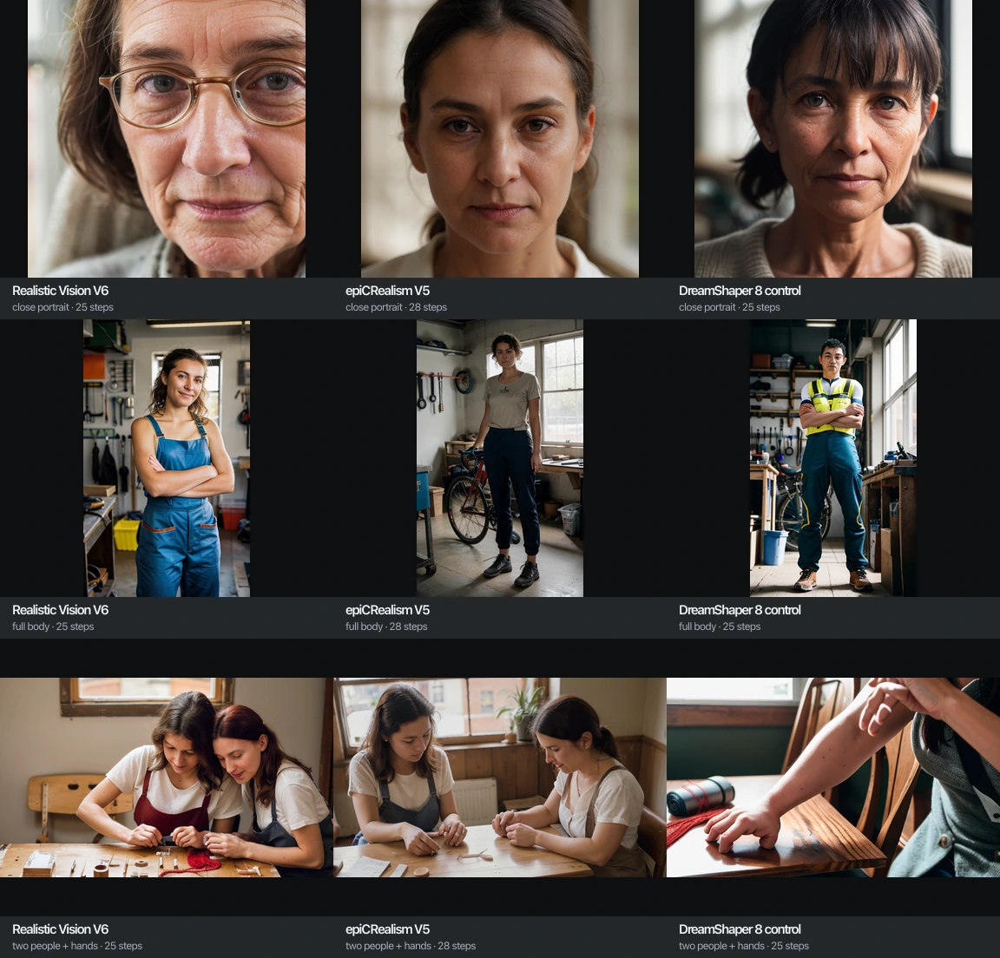

Eight gigabytes, no miracles, and one useful loophole
The seven tiny suitcases fit through the door. Then we opened them and discovered that “fits in memory” and “can draw a convincing person” are entirely different product requirements.
The tiny models are bad at humans. Not charmingly vintage bad. Faces collapse, hands negotiate their own treaties, and bodies occasionally remember that elbows exist only after the image has finished.
So we went back to research with a better question:
What is the highest-quality local image pipeline that can coexist with macOS and TurboFieldfare on an 8 GB M1, even if it has to quantize, tile, crop, unload, or generate the image in pieces?
The answer is not one magic checkpoint. It is two deliberately separate lanes.
The recommendation
Lane A — dependable now: use a human-focused SD1.5 checkpoint, then repair faces and hands through small sequential inpainting crops. Generate composition at a modest landscape resolution, upscale through tiled diffusion, decode through tiled VAE, and unload between stages.
Lane B — higher ceiling, admission required: run a photoreal SDXL fine-tune
with compressed weights through a separate low-memory runtime. Start with
RealVisXL Q5/Q4 in stable-diffusion.cpp; keep Draw Things and Core ML as
fallback runtimes. This may produce substantially better people, but nobody
upstream has proved the exact model/runtime combination on an 8 GB M1.
Do both. Lane A gives us something trustworthy. Lane B discovers whether the Mini has a better trick available.
Why fewer steps did not save us
LCM, Lightning and Turbo reduce how many times the denoiser runs. They do not make the denoiser, text encoders, VAE, or one step's activations disappear. That is why a four-step SDXL still has SDXL's weight floor.
Our own allocator measurements on the 36 GB M3 put ordinary SDXL workflows at about 11 GB peak: roughly 5.3 GB resident weights plus another 5.5–5.7 GB of sampling activations (the measured numbers). An 8 GB unified-memory machine cannot turn that into a safe production route by crossing out twenty-six sampler steps.
Four different tools attack four different parts of the budget:
- Weight quantization shrinks model residency.
- Crop inpainting and tiled diffusion shrink diffusion activations by operating on less spatial area at once.
- Tiled VAE shrinks the decode peak only.
- Hard unload boundaries ensure that yesterday's model is not still sitting in memory when tomorrow's stage begins.
Apple Silicon's CPU and GPU share one physical pool. CPU offload can change which processor owns a tensor, but it does not reveal a secret second 8 GB cupboard (Apple's unified-memory architecture; ComfyUI classifies MPS as shared memory).
Lane A: give SD1.5 a job it is actually good at
DreamShaper 8 is versatile; it is not the strongest portrait checkpoint. The first new candidates should be:
Realistic Vision V6.0 B1
The creator targets realism and photorealism, publishes a roughly 2.1 GB FP16
SD1.5-class checkpoint, and provides a dedicated inpainting release
(model card;
inpainting release).
It uses the familiar SD1.5 CLIP-L encoder; the no-VAE artifact needs
sd-vae-ft-mse.
This is the first prototype because it changes the model's training target without changing the Mini's basic memory shape.
epiCRealism Pure Evolution
The creator describes it as people- and photorealism-focused, demonstrates 512×768 and 768×512 generations, and publishes inpainting variants (creator release). It is the honest comparator: same SD1.5-class budget, different portrait fine-tune.
There is no controlled evidence that it beats Realistic Vision. That is why we have a test matrix instead of a fan club.
DreamShaper 8 stays
DreamShaper remains the general-purpose control. Its author explicitly notes that specialist realism models can beat it, and its showcase images commonly use hires fix or img2img (base model; inpainting model).
It should stop carrying the burden of proving that all SD1.5 models are bad at people.
The useful loophole: redraw only the broken bits
The smallest high-quality second pass is the one that never sees most of the image.
ADetailer documents the core sequence as generate → detect → mask → inpaint (official repository). ComfyUI Impact Pack's FaceDetailer and SEGSDetailer apply the same idea to detected crops (Impact Pack).
The proposed Mini pipeline is:
- Generate one 704×384 or 768×432 image with Realistic Vision, epiCRealism, or DreamShaper.
- Latent-upscale 1.5×.
- Run the second diffusion pass through MultiDiffusion-style overlapping 512-pixel tiles, tile batch one (MultiDiffusion; ComfyUI tiled implementation).
- Decode with ComfyUI's built-in
VAEDecodeTiled, initially 512-pixel tiles with 64-pixel overlap (official node documentation). - Detect and inpaint one face crop at a time, around 512 pixels, with moderate denoise.
- Detect and inpaint each hand separately with a wider context crop.
- Save, call ComfyUI's
/freeendpoint, and prove TurboFieldfare recovers before starting another stage (ComfyUI API).
Crop processing lowers the activation peak; it does not shrink the checkpoint. Hands can still fail because a detector finds the region but supplies no 3D hand solution. Still, this is the highest-confidence quality-per-memory move.
Avoid SAM initially. Bounding boxes with dilation and feathering avoid loading another segmentation model. Our current ComfyUI has tiled VAE and GGUF loaders, but no FaceDetailer node installed as of this post, so the detailer pack is a real prerequisite rather than a box already ticked.
OpenPose, restoration, and other tempting side quests
OpenPose supplies body, hand and face keypoints (official implementation). An SD1.5 OpenPose ControlNet can materially improve pose, but ControlNet must operate alongside the UNet during denoising. It adds memory rather than reducing it (ControlNet paper). Use it only for pose-critical jobs, and unload the pose preprocessor before sampling.
CodeFormer and GFPGAN are final-resort face reconstruction tools, not anatomy engines. CodeFormer's fidelity weight explicitly trades restoration quality against identity (paper); GFPGAN's authors warn that some versions can change identity (official repository).
If we use either, it runs after diffusion has unloaded, and the original face stays beside the restored one for review.
Lane B: compressed SDXL, outside ordinary ComfyUI
Full SDXL is too close to the ceiling. A photoreal SDXL with compressed weights may not be.
First runtime: stable-diffusion.cpp
This is the best service-shaped experiment. It supports Metal, SDXL,
.safetensors and GGUF, VAE tiling, component placement, and an HTTP server
with OpenAI-style image endpoints
(project;
quantization guide;
server API).
A Node client can use ordinary fetch; no Python state has to leak into
localimagegen.
Prototype RealVisXL V5 Q5 first, then Q4 only if Q5 does not fit. One available third-party Q5 UNet is 1.84 GB; with both SDXL text encoders and VAE, the file-size floor is roughly 3.8 GB (quant repository; RealVisXL author card).
That number is not a prediction of peak memory. Dequantization buffers,
activations, mapped files, macOS and TurboFieldfare still exist. The
stable-diffusion.cpp project has no exact M1/8 GB RealVisXL proof, so this
remains an admission experiment.
Quantization is also awkward for SDXL: much of its UNet is convolution-heavy, and ComfyUI-GGUF explicitly warns that these models gain less than transformer-heavy DiTs (loader tooling). Every Q5/Q4 output must be compared against an FP16 reference for faces, skin texture, prompt adherence and style drift.
Draw Things: easiest operational comparison
Draw Things documents 8-bit SDXL/Juggernaut as workable—slowly—on an 8 GB M1
MacBook Air, supports model conversion, and publishes a headless macOS
gRPCServerCLI
(device guide;
8-bit conversion;
open server repository).
It may be the fastest way to answer “does an 8-bit portrait SDXL look good on this Mini?” before building our own sidecar. Its exact claim is product documentation rather than a controlled allocator trace, so it does not bypass the admission gate.
Core ML: strongest compression machinery, most engineering
Apple's converter supports SDXL, post-training palettization, mixed-bit compression, and just-in-time model loading. Apple's 4.5-bit SDXL recipe shrinks the UNet from about 5.2 GB to 1.46 GB (Apple repository).
The attractive architecture is:
- convert the photoreal fine-tune on the 36 GB laptop;
- deploy compiled resources to the Mini;
- run a persistent Swift sidecar with
reduceMemory; - let Core ML schedule CPU, GPU and Neural Engine.
Apple says base-model compression recipes are likely to transfer to compatible fine-tunes, but marks that assumption untested. There is no RealVisXL/Juggernaut 8 GB M1 proof. Core ML is the long-term native option, not the first weekend prototype.
MLX SDXL-Turbo: the known-fit control, not the quality winner
Apple's MLX example is the one exact upstream demonstration on an 8 GB M1 Mac mini. It quantizes both text encoders to four bits and the UNet to eight bits, then runs SDXL-Turbo without generation-time swapping (README; implementation).
That proves an SDXL-shaped pipeline can fit. It does not solve this product problem: Stability's own SDXL-Turbo card warns about faces, people and imperfect photorealism (model card).
Use it as a memory-control specimen. Do not crown it portrait champion because it survived.
Other candidates worth one controlled attempt
SD3.5 Medium Q4 without T5 has a roughly 1.79 GB quantized denoiser and can use only CLIP-L plus CLIP-G, sacrificing long-prompt comprehension. Stability explicitly permits omitting T5 and recommends Skip Layer Guidance for anatomy (official card; GGUF artifact). It is the best architecture-level alternative after RealVisXL.
KOALA 700M compresses SDXL's UNet while retaining its dual encoders and VAE. The authors ran it at 1024² on an 8 GB RTX where SDXL Base failed (model card). Discrete VRAM is not unified memory, and its portrait advantage over Realistic Vision is unproved, but its approximately 3.5 GB component floor makes it a reasonable fit experiment.
FLUX.2 Klein 4B is a modern 4B transformer under Apache 2.0 (official card). Q3/Q4 transformer plus Qwen3-4B encoder leaves very little headroom in 8 GB. Test only after the two SDXL experiments; “4B” does not include the text encoder or activations.
Do not spend another night on these
- SDXL Lightning and LCM-LoRA: fewer steps, same SDXL residency.
- Full SDXL in ordinary MPS ComfyUI: our own 11 GB peak already answered it.
- SD3.5 Large/Turbo: the model is larger; Turbo changes time, not size.
- PixArt Sigma as a self-contained pipeline: the denoiser is small but T5-XXL is not. Diffusers' under-8-GB recipe quantizes and unloads T5 on CUDA, not MPS (official documentation).
- Sana for humans: compact and clever, but its current model card explicitly lists weak hands and imperfect photorealism (model card).
- Stable Cascade: multiple large stages and no separate CPU memory pool.
- FLUX.1, Z-Image, Qwen-Image and other 6–20B families: low-bit main weights still leave encoders, VAE, buffers and the operating system fighting over the same eight gigabytes.
- Face restoration as the default: a more plausible stranger is not necessarily the same person.
The admission sequence
No new model joins the production route by reputation.
- Add the normal Realistic Vision V6 and epiCRealism checkpoints to the gallery at an M1-sized 640×384; keep their inpainting variants in the test catalog until the crop pipeline exists.
- Use a small fixed human prompt suite: close portrait, full body, two people, hands interacting with an object, and the existing patch scenes.
- Establish plain 512-class outputs first.
- Add one-face-at-a-time and one-hand-at-a-time crop inpainting.
- Add tiled upscale/decode only after the crop pipeline is stable.
- Run the existing Mini admission gate: allocator peak, complete/partial load,
swap, duration, thermal behavior,
/freerecovery, and TurboFieldfare responsiveness. - In parallel, run one RealVisXL Q5 fixed-seed comparison through
stable-diffusion.cppat 512² and 704×384. - Compare every compressed SDXL result against the laptop's FP16 reference, not against our disappointment with SD1.5.
- If Q5 fails memory, try Q4. If Q4 damages faces or prompt adherence, stop; do not keep shaving bits until a file fits and the model disappears.
- Only after those results consider SD3.5 Medium Q4 or KOALA.
The first tiny reference matrix
Before asking the Mini to prove memory safety, we ran one deliberately small quality reference on the 36 GB development Mac. Three SD1.5-class checkpoints got the same three human prompts and seeds: a close portrait at 512×512, a full-body mechanic at 384×640, and two people repairing a satchel at 640×384. Every canvas stays at or below roughly 512² pixels.

The result supports the two-lane recommendation without pretending to finish the admission test. Realistic Vision and epiCRealism both produce materially more convincing portraits and full bodies than the tiny speed-first models; DreamShaper remains a useful general-purpose control. The interaction row is the useful failure: Realistic Vision and epiCRealism understand the shared repair scene but do not deliver four trustworthy hands, while DreamShaper collapses the two-person composition to one person. A better checkpoint raises the base quality floor; it does not remove the need for crop inpainting.
That was enough evidence to promote the two normal checkpoints into the full existing-prompt matrix—not to mark them M1-supported, but to inspect their behaviour across every patch scene and step rung. Their gallery workflows stay at 640×384, below the pixel area of 512×512.
The exact batch-one graphs live under workflows/m1/:
512×512 templates for Realistic Vision V6, epiCRealism V5 and the DreamShaper 8
control, with no FP8 or cosmetic adapter. The resumable runner is
scripts/low-memory-quality-matrix.ts
(yarn matrix:low-memory-quality); it consumes those committed workflows and
keeps every scenario at or below roughly 512² pixels. Its generated manifest
records prompts, seeds, dimensions and recipes. These images prove that the
candidates are worth taking to the Mini; they do not prove M1 support,
allocator safety or TurboFieldfare coexistence.
A portrait model found an unwelcome shortcut
The first full-prompt sweep exposed a safety property that the tidy human test did not: Realistic Vision occasionally recast the sleeping dragon scene as a nude person, and made a clothed embrace unexpectedly exposed. More steps did not reliably cure the semantic substitution; one seed stayed unsafe at 13, 25 and 29 steps.
The gallery notes sidecar now supports an nsfw flag per cell. Marked images
are blurred in the gallery by default; the viewer must explicitly enable
Show NSFW to reveal them. The note editor can set the flag while recording
why it was marked. That keeps the comparison evidence intact without making a
surprise image the default public view.
Decision
The Mini does not need a smaller imagination. It needs a better division of labour.
Use a specialist small model where the evidence is strong. Redraw the expensive details in small pieces. Meanwhile, compress one genuinely better large model and make it prove that the quality survived.
Eight gigabytes offers no miracles. It does, however, offer one useful loophole: the whole image never has to be difficult at the same time.